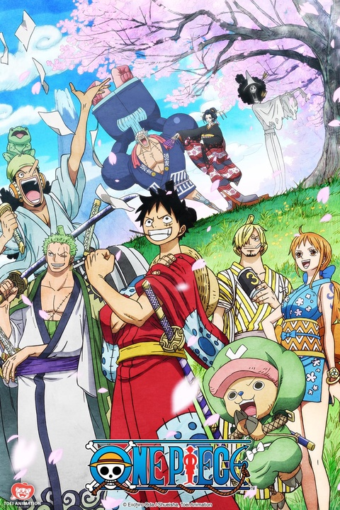
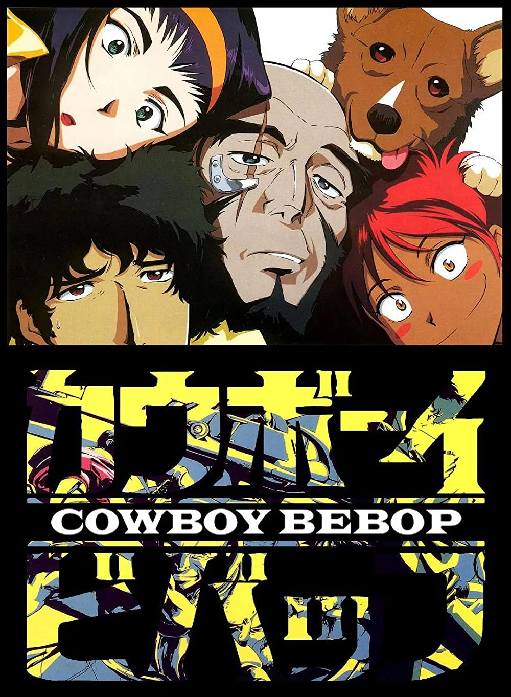
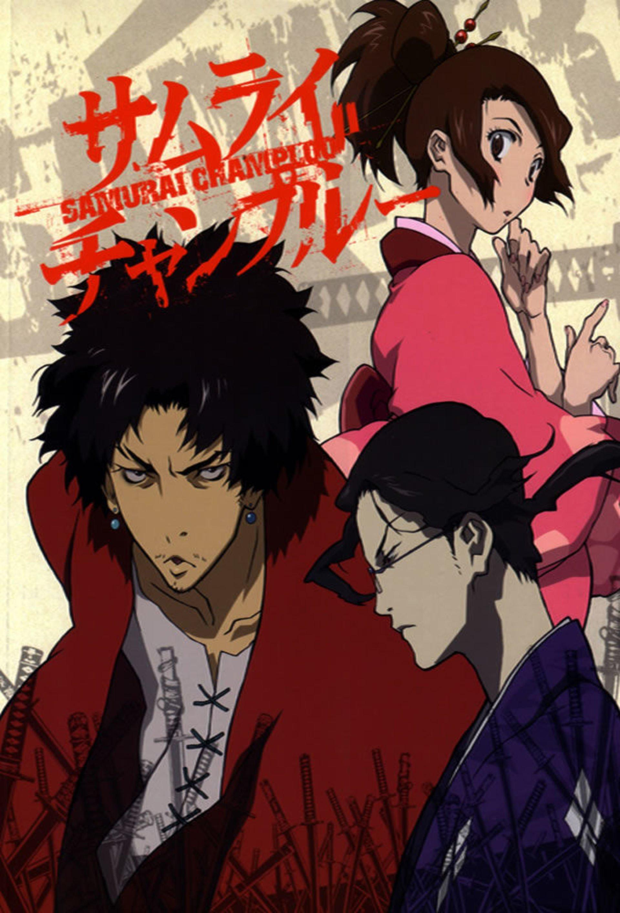

ANIMES
Hunter x Hunter
Hunter x Hunter
Monstros amedrontadores, criaturas exóticas, riquezas vastas, tesouros misteriosos, terras vis e terras inexploradas... Gon parte em uma aventura para se tornar um caçador profissional que arrisca a própria vida em busca do desconhecido. Pelo caminho, ele conhece outros participantes da Prova dos Caçadores: Kurapika, Leorio e Killua. Será Gon capaz de vencer os grandes desafios da Prova de Caçadores e se tornar o melhor do mundo? Esta jornada selvagem e épica está prestes a começar!!
9/10
91%
One Piece

One Piece
Houve um homem que conquistou tudo aquilo que o mundo tinha a oferecer, o lendário Rei dos Piratas, Gold Roger. Capturado e condenado à execução pelo Governo Mundial, suas últimas palavras lançaram legiões aos mares. "Meu tesouro? Se quiserem, podem pegá-lo. Procurem-no! Ele contém tudo que este mundo pode oferecer!". Foi a revelação do maior tesouro, o One Piece, cobiçado por homens de todo o mundo, sonhando com fama e riqueza imensuráveis... Assim começou a Grande Era dos Piratas!
8.9/10
88%
Cowboy Bebop

Cowboy Bebop
O advento dos portais hiperespaciais, que permitem a viagem entre planetas em tempo hábil, deram início a uma Era Espacial no Sistema Solar. Spike, um ex-mafioso, e Jet, um ex-policial, são "cowboys", caçadores de recomepensas que voam pelo universo em busca de cabeças a prêmio. Juntos com Faye, uma misteriosa mulher desmemoriada com uma imensa dívida; Ed, uma criança selvagem com um tino para o hacking; e Ein, um corgi dotado de inteligência humana; os cinco levam uma estranha vida em comunidade a bordo da nave interplanetária Bebop.
8.9/10
95%
Samurai Champloo

Samurai Champloo
Fuu, uma jovem de 15 anos, quer encontrar "o samurai com cheiro de girassol", e tudo o que sabe a respeito dele é que ele habita a outra extremidade do Japão. No seu caminho, cruza com Mugen, um vagabundo de 20 anos, e Jin, um ronin de 20 anos, que deverão segui-la devido a uma aposta estupidamente perdida.
8.6/10
94%
Cyberpunk edgerunners
Cyberpunk Edgerunners
CYBERPUNK: EDGERUNNERS CONTA UMA HISTÓRIA INDEPENDENTE DE 10 EPISÓDIOS SOBRE UM MARGINAL TENTANDO SOBREVIVER EM UMA CIDADE DO FUTURO OBCECADA POR TECNOLOGIA E MODIFICAÇÕES CORPORAIS.
8.3/10
95%
Inicio